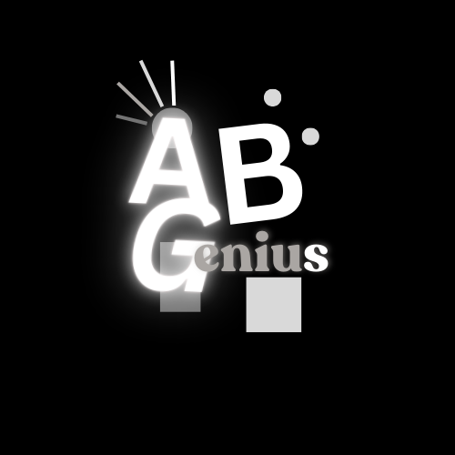

ABGenius
by

ABGenius transforms complex arterial blood gas interpretation into intuitive, actionable insights for healthcare professionals worldwide

Perfect for emergency situations. Input basic ABG values and receive instant interpretation with clinical suggestions in seconds. Includes acid-base status, compensation analysis, and treatment recommendations.
Comprehensive analysis for complex cases:
Advanced Mode provides hospital-grade analysis using multiple methodologies simultaneously, offering detailed insights for complex clinical scenarios.
Educational tool for students and professionals to master blood gas interpretation through interactive simulation.
Perfect for medical students, residents, nurses, respiratory therapists, and experienced clinicians looking to refine their blood gas interpretation skills in a risk-free environment.
Identifies patterns suggesting multi-organ dysfunction syndrome with severity assessment
Detects mixed metabolic disorders with probability scoring
Full functionality without internet connection for critical situations
Comprehensive normal ranges and clinical interpretation guides
Identifies complex clinical patterns across multiple parameters
Evidence-based clinical suggestions tailored to findings
See ABGenius in action with these preview screenshots

testing

testing

testing

testing

testing

testing

testing

testing
Developed by Dr Waleed Sheha, ABGenius represents the cutting edge of clinical decision support technology. Our proprietary algorithms have been validated against thousands of clinical cases to ensure accuracy and reliability.
Created by SyvurSoft Lab, ABGenius combines decades of medical expertise with advanced computational models to deliver an indispensable tool for healthcare providers worldwide.
ABGenius algorithms have been validated against thousands of clinical cases with over 90% accuracy compared to expert interpretation. Our multi-methodology approach ensures comprehensive analysis across different clinical scenarios.
Yes, ABGenius is designed to function fully offline. Once installed, all calculations and analyses are performed locally on your device, making it reliable in any clinical setting.
Absolutely! The Simulation Mode was specifically designed for medical education. Students and residents can practice with virtual cases, adjust parameters, and see real-time effects on acid-base status.
We release major updates quarterly with new features and improvements. Minor updates and bug fixes are released as needed. All updates are based on user feedback and advances in medical knowledge.
ABGenius is being developed with input from medical professionals. Here's what our early testers are saying:
"The algorithm's accuracy in our testing environment shows promising results for complex acid-base disorders."
"The simulation mode prototype demonstrates significant potential as a teaching tool for medical students and residents."
"Initial usability testing indicates strong potential for workflow integration in emergency and critical care settings."
Note: ABGenius is still in development. These insights reflect preliminary feedback from our testing groups rather than individual endorsements.
Be among the first healthcare professionals to test and provide feedback on ABGenius.
Request Early Access